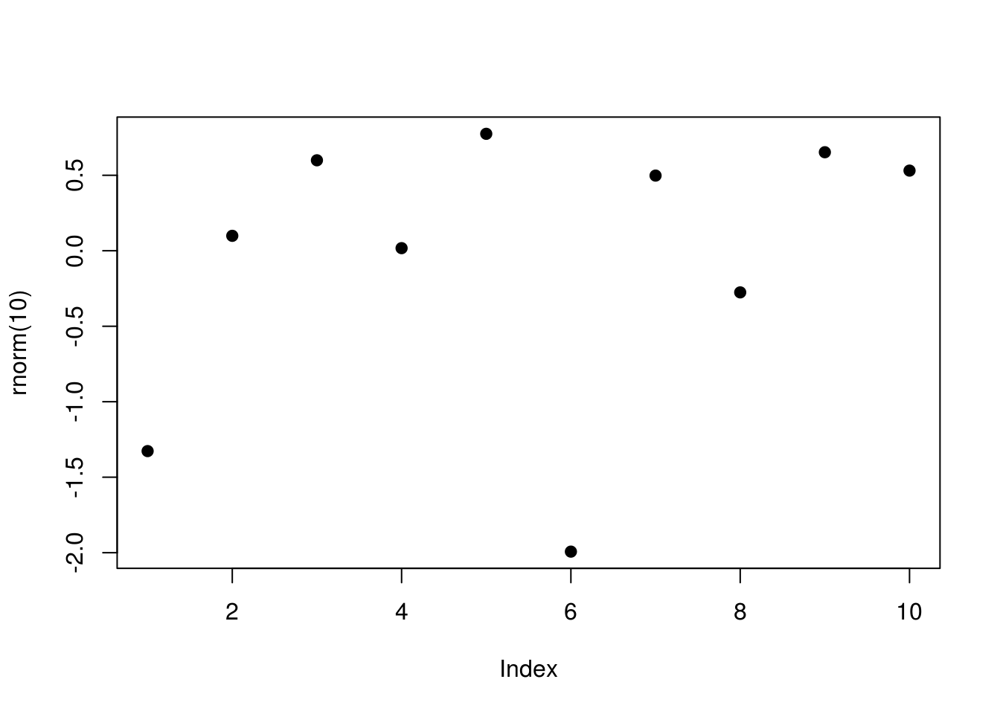
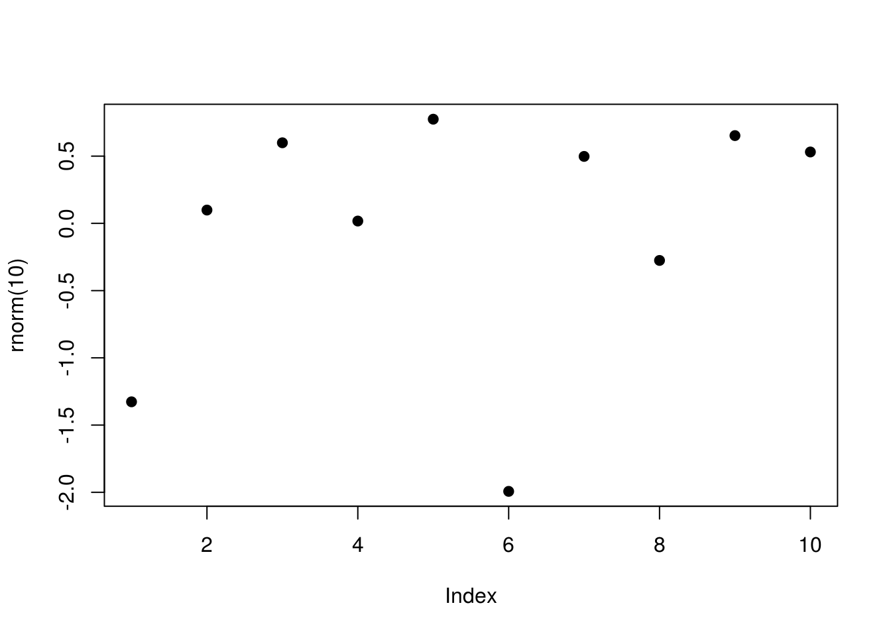

Chapter 5 LaTeX
For many authors, the main of long reports or books, the primary output will be LaTeX. In this chapter, we discuss approaches which can be used to customise the output of PDF reports.
Users should approach with a note of caution. One of the major benefits of R Markdown is
5.1 Inserting Commands
5.2 LaTeX preamble
5.3 Multi-figure plots
If we need to print multiple output graphs or figures, there are several ways this can be achieved.
5.4 Cross-output
As explained in https://bookdown.org/yihui/rmarkdown/r-code.html#figures of (???), we can place multiple figures side-by-side using the fig.hold='hold' along with the out.width option. As an example below, we have set the out.width="50%":
plot(1:10)
plot(rnorm(10), pch=19) 

Figure 5.1: Side-by-side figures
The main benefits of this approach is that it is easily achieved, and also works for both PDF and HTML outputs.
5.5 LaTeX subfigures
When writing a document you may want to include some slightly more complicated figures with multiple images. Subfigures are a useful LaTeX feature which allows us to achieve this by plotting multiple figures within a single plot and providing each with their own subcaption.
Subfigures require the LaTeX package subfig. The line \usepackage{subfig} must therefore be included within the YAML, or if you are using an external tex template you can add this to that file. For example:
As listed within the knitr chunk options, subfigures require a few additional settings to be set in the chunk header:
fig.subcapis a list of the captions for subfiguresfig.ncol: the number of columns of subfiguresout.width: the output width of the figures. You will normally set this 100% divided by the number of sub columns.
An example is demonstrated below:
```yaml
output: pdf_document
header-includes:
- \usepackage{subfig}
```
```{r fig-sub, fig.cap='two plots', fig.subcap=c('one plot', 'the other one'), out.width='.49\\linewidth', fig.asp=1, fig.ncol = 2}
plot(1:10)
plot(rnorm(10), pch=19)
```The output is shown in Figure 5.2.
knitr::include_graphics("images/subfigure.png", dpi = NA)
Figure 5.2: An example subcaption